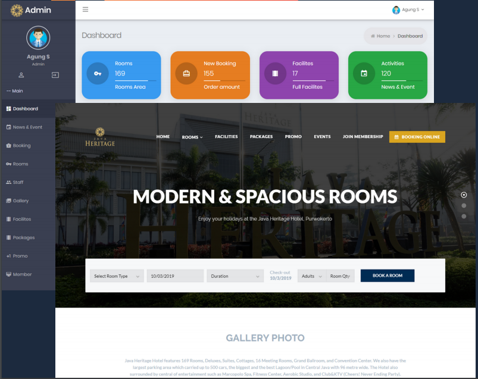

Website
Hotel Java Heritage Purwokerto
Website hotel dan reservasi online. Memiliki fitur transaksi menggunakan payment gateway (Bisa pembayaran cashless). Kini booking hotel mudah dengan sistem reservasi secara online. Laporan keuangan juga dapat dipantau dengan baik. Mendukung multi bahasa.